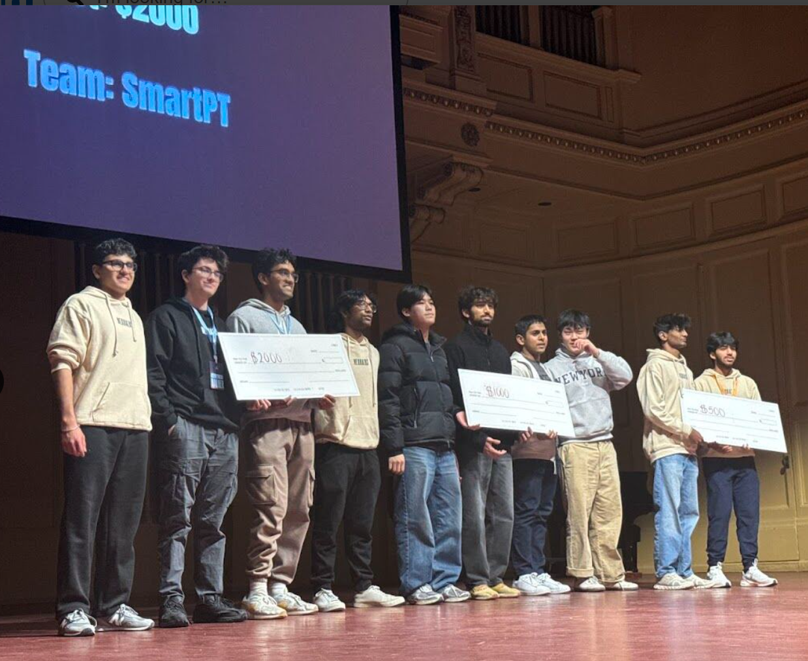
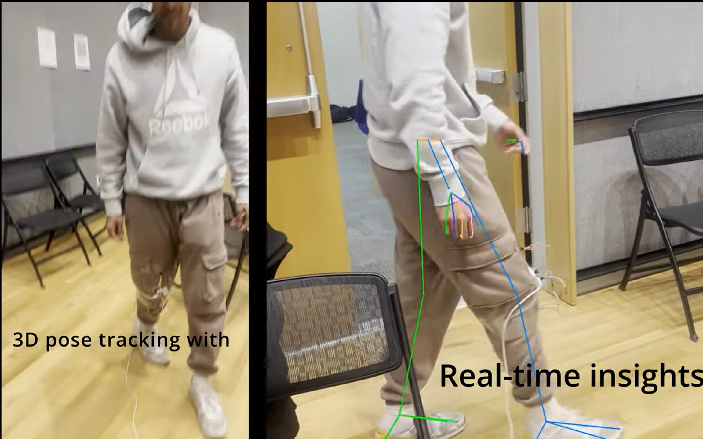
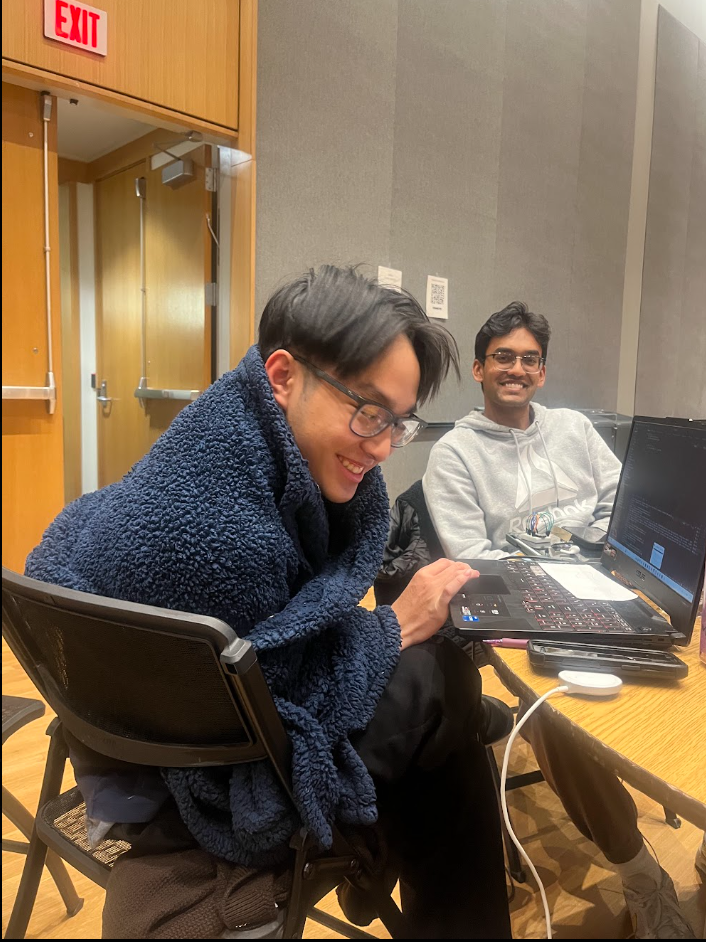

Competition Overview
- Placement: 1st of 282 teams in Healthcare track.
Project Links
Technologies Used
- Flutter
- Python
- C++
- Embedded Systems
Details
For this project I worked with two new teammates: Aditya Pulipuka (UT Austin) and Dustin Nguyen (UF). They were both really fun to work with and I was really excited about this project because computer vision has been a personal interest of mine for a while. I handled a lot of our RTMpose setup and inference, while Aditya did some crazy cool hardware work and Dustin fully reverse engineered Overshoot's (an event sponsor) entire WebRTC pipeline to stream video at a good bitrate.

SmartPT was built to help patients recover more safely at home after injuries like torn ACLs, where making repeated in-person PT visits can be difficult and exhausting. The project focuses on giving patients a more detailed level of feedback than they would normally get in a clinic, while also helping clinicians access more measurable recovery data from anywhere.
While working we focused on precision and reliability as central design goals. The system combines 3D pose estimation with physical IMU sensor data so it can estimate positions and angles more accurately, then uses video segmentation and filtering to smooth the results and reduce visual jitter. That setup lets the platform provide real-time therapy guidance while keeping the metrics interpretable and useful for both patients and doctors.

